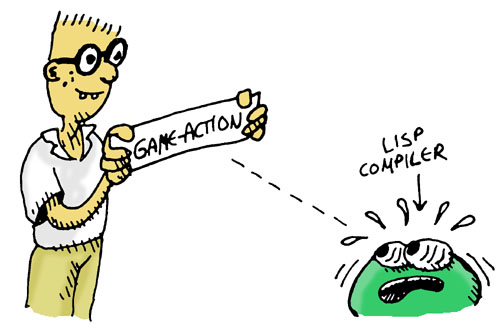

Creating Special Actions
You probably noticed that the dunk command looked a lot like the weld command... Both commands need to check the location, subject, and object -- but there's enough making them different that we can't combine the similarities into a single function. Too bad...
...but since this is Lisp, we can do more than just write functions, we can cast SPELs! As usual, we're going to need some helper functions. We're going to need a function that will allow us to create function names by concatenating atoms. If we've got a list of atoms:
'(cat these atoms)
and we know that the (atom_to_list ...) function will let us convert each atom to a string (strings and lists are the same thing in LFE), you might be thinking we could use some new tricks we learned:
- send the list of atoms to the
lists:mapcommand - and send the
#'atom_to_list/1function to thelists:mapcommand - wrap the result with
(list_to_atom ...) - and get our new, longer atom ...
(Do you see the problem yet?)
Let's try it:
lfe> (lists:map #'atom_to_list/1 '(cat these atoms))
("cat" "these" "atoms")
Oh dear! We now have a list of lists (strings), not a single, larger atom. We've seen another function we could use, string:join/2:
lfe> (string:join (lists:map #'atom_to_list/1 '(cat these atoms)) "")
"cattheseatoms"
and then we could turn that into an atom:
lfe> (list_to_atom (string:join (lists:map #'atom_to_list/1 '(cat these atoms)) ""))
cattheseatoms
But doesn't it seem like there should be a function, like lists:map that would let us to it all at once? You know, map it and then maybe reduce the list of strings to one string? Fold that list of strings into a single one? Amazing that you should ask that -- there is such a function: lists:foldl. Unlike lists:map, though, it uses a function that takes two arguments, not just one:
- an item from the list you gave it, and
- an accumulator (in our case, the string that we are building up from atoms)
So let's write a little helper function we can use with lists:foldl:
(defun add-next-atom (next-atom so-far)
(++ so-far
(atom_to_list next-atom)))
Let's check it:
lfe> (add-next-atom 'these "cat")
"catthese"
Looks good! Now let's try it for real, setting our accumulator string (the "so far" string) to empty:
lfe> (lists:foldl #'add-next-atom/2 "" '(cat these atoms))
"cattheseatoms"
Let's use it to make a new function:
(defun ccatoms (atoms)
(list_to_atom
(lists:foldl #'add-next-atom/2 "" atoms)))
We're going to use that function to create names in our macros, er, rather ... "SPEL"s.
Now we can create a new SPEL to save us from having to repeat so much code:
(defmacro game-action (cmd sub obj goal-name)
`(defun ,(ccatoms `(do- ,cmd))
((',sub ',obj game-state)
(let ((ready? (,(ccatoms `(,cmd -ready?)) game-state)))
(cond ((goal-met? ',goal-name game-state)
(,(ccatoms `(already- ,cmd ed)))
game-state)
((not ready?)
(,(ccatoms `(,cmd -not-ready)))
game-state)
(ready?
(,(ccatoms `(good- ,cmd))
(update-goals ',goal-name game-state))))))
((_ _ game-state)
(,(ccatoms `(cant- ,cmd)))
game-state)))
Notice how ridiculously complex this SPEL is -- it has more weird quotes, backquotes, and commas than you can shake a list at. More than that it is a SPEL that actually cast ANOTHER SPEL! Even experienced Lisp programmers would have to put some thought into creating a monstrosity like this (and in fact they would consider this SPEL to be inelegant and would go through some extra esoteric steps to make it better-behaved that we won't worry about here...)

The point of this SPEL is to show you just how sophisticated and clever you can get with these SPELs. Also, the ugliness doesn't really matter much if we only have to write it once and then can use it to make hundreds of commands for a bigger adventure game.
Let's use our new SPEL to replace our ugly weld-them command:
lfe> (game-action weld chain bucket weld-chain)
do-weld
Look at how much easier it is to understand this command- The game-action SPEL lets us write exactly what we want to say without a lot of fat -- It's almost like we've created our own computer language just for creating game commands. Creating your own pseudo-language with SPELs is called Domain Specific Language programming, a very powerful way to program very quickly and elegantly.
...we still aren't in the right situation to do any welding, but the command is doing its job!
Next, let's rewrite the dunk command as well:
(game-action dunk bucket well dunk-bucket)
do-dunk
Now we're ready to tackle the biggest move of the game ...